Voting Algorithm for predicting Denial Of Service Attacks based on system-logs and IP packets
using BERT and Random Forest
Role
As my final Master's project (Honours Project), I had the opportunity to work
on an original project proposed by me with the orientation of my supervisor. At the beginning of
the project, I was part of a team of two, and we both worked on creating a state-of-the-art
dataset. I will explain this step in detail later. Unfortunately, after finishing collecting the
data, we split. I got to work on cleaning the data, training and fine-tuning the models, and,
of course, evaluating the ensemble's performance.
Problem
This was a very challenging project for several reasons. First, I only had a
couple of months to finish the project. Second, as we were collaborating with company X,
and they were providing part of the infrastructure for obtaining the data, we had to adjust our
methods to their technology. Third, we had to train very complex NLP models in a tiny amount of
time and find a way to make the ensemble efficient.
Solution
I will first describe how we obtained the dataset and then describe the implementation and the
architecture of the solution as a whole.
There were two different datasets to collect, one which contained the system logs of a computer
and another one which included information related to the IP packets viewed from the side of a
router. Simply put, we created a LAN and a WAN connected by a router using three independent
computers physically connected between them. We used virtual machines (VM) to simulate three
different components: an attacker (using Linux Kali, metasploitable, and hping 3), a storing
database (using MongoDB) and finally, a vulnerable machine, which was a matasploitable VM. As
mentioned before, we had a router also in a VM from company X. The following image shows a quick
representation of our LAN and WAN architecture. Attacks came from the right side of the network
to the left side, passing through the router.
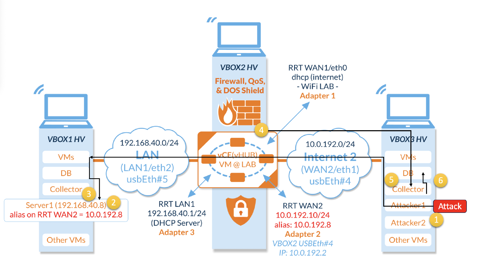
One of the most challenging parts was to extract the information from the router. As it is a
Linux-based system, there is no friendly interface to communicate with it, so we had to learn
nodeJS to create end points and use other JavaScript libraries to create and receive POST
requests to send everything the router received to the database in an XML, to then be cast into
a JSON file and finally stored in MongoDB.
As mentioned before, we had to create two different datasets; the above-mentioned method was
used to create the first dataset, which contained information regarding the IP packets. In this
dataset, we stored raw data such as the protocols used and the IP addresses, to name a few
examples. The following image shows an example of the dataset:
The second dataset was more straightforward to collect as we just needed to move
all the system logs from the vulnerable machine, which has a Linux-based interface, and then
filter only the logs which contain relevant information. For both datasets, we performed DoS
attacks using HPING 3, which, in simple words, creates a flow of IP packets sent from an attacker
to a receptor. For my research, we kept track of the time and date when the attack happened,
and then we labelled all logs and all packets that occurred during that time as attacks.
Random Forest Classifier
To classify the IP dataset, I trained a Random Forest Classifier model on the data obtained.
After cleaning the data and labelling it, I performed different feature selection methods,
compared the results and chose only the best. These methods were Pearson Correlation, Feature
Importance with Random Forest and Recursive Feature Elimination (RFE). I chose the best 15
features from each technique and trained the RF models with each feature combination. In the end,
the best performance was shown by the features obtained with Pearson Correlation. Once the
features were selected, I did parameter tuning using the Randomized Cross Validation function.
BERT Binary Classifier
Once I finished training my Random Forest model and cleaning the logs, I selected only
those files which contained data within the window of time in which I performed the
attacks or the one in which I created regular traffic. As I was working with a
pre-trained model, it is important to mention that my implementation was done using
Tensorflow.
Once I had all the logs in a single CSV file, I downloaded two different pre-trained models,
normal BERT and DistilBERT. Both using 12 hidden layers and 12 attention-heads. It is also
important to mention that I downloaded their respective tokenizers to pre-process the text.
As the output layer of my BERT-based model is a vector of 768 elements, I coded a dropout
layer with a 10% ratio to avoid overfitting, followed by a single neuron using the Sigmoid
function to output the binary prediction.
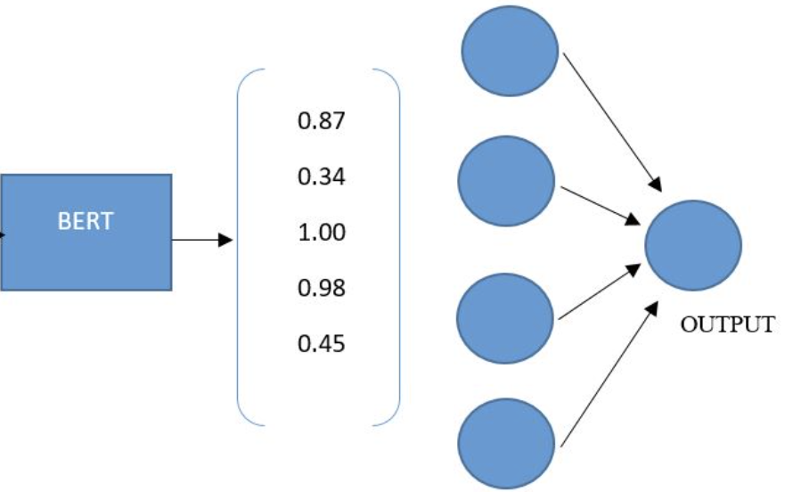
Voting Algorithm
The performance of each model by itself could be better by creating synthetic variables from
the raw IP packets. Also, due to the technical complexity of the system logs, both models could
perform better when the testing data approaches reality. In my case, I created different batches
of testing data. The first is balanced, using 50% attacks and 50% benign. Then, the attack data
decreases until it approaches a realistic scenario where the attacks only represent 2% of the
total data. The following graph shows how the data imbalance affects the Random Forest
performance.
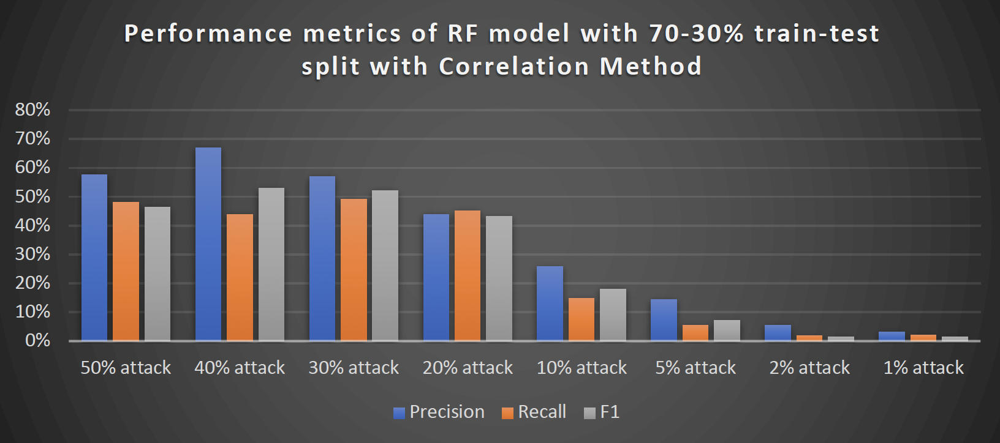
To mitigate this problem, I proposed a voting algorithm using a hard voting technique. The
main idea behind my proposal will be to train three different models: one BERT and two
RandomForest Classifiers trained on independent data. I chose an odd number of models to
avoid having a 50/50 vote.
Let's imagine we are analyzing one packet which arrived five milliseconds ago, precisely at
10:00 p.m. The first step will be to look for a log with the same date and time. If there is no
log, then there is no point in using NLP, so the prediction will only be made by the first RF.
But, in the opposite case, if there are logs with the same date and time, we will extract that
information, ask BERT for a prediction and ask both RFs for their independent predictions.
The class with the most votes at the end of the day will be the final prediction of the voting
algorithm.
This is one of many tasks of the algorithm; I also tried to improve the efficiency of my
voting algorithm by creating and testing different time-windows. For example, if the packet
arrived at 10:00 p.m., and there are no logs, how about we look for the logs from 30 seconds
ago? Or 1 minute ago? The experiments that I performed involved using different time windows
of [+-1 min, +-2 mins and +-3 mins].
Now let's jump right into the results. Firts let me show you how the models
performed after fine tuning in the image below:
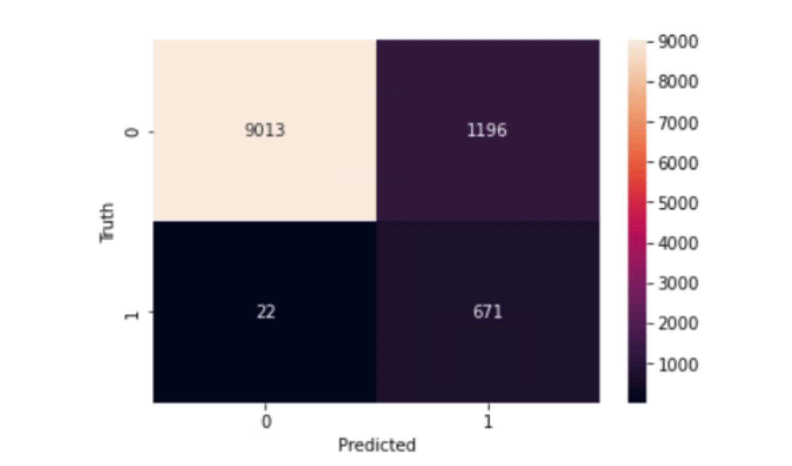
Confusion Matrix of DistilBERT fine-tuned model
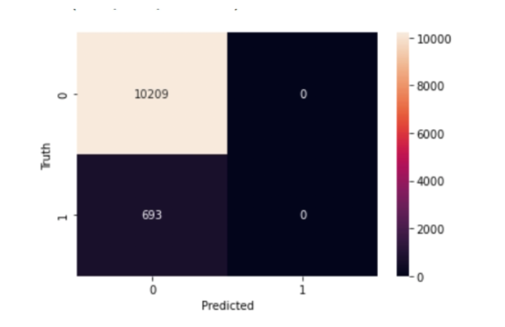
Confusion Matrix of BERT model fine-tuned
After training the models, let me show you the results of how the time-window method worked.
In the following graphs, I compare the number of true positives, true negatives, false
positives and false negatives with each configuration. Once you look at them, we can
conclude some exciting things. First, increasing the window in time helps predict more
true positives, but it also increases the number of false positives. This behaviour for our
application is more desirable than increasing the false negatives, as we might prefer to
stop some potential IP traffic rather than letting it pass.
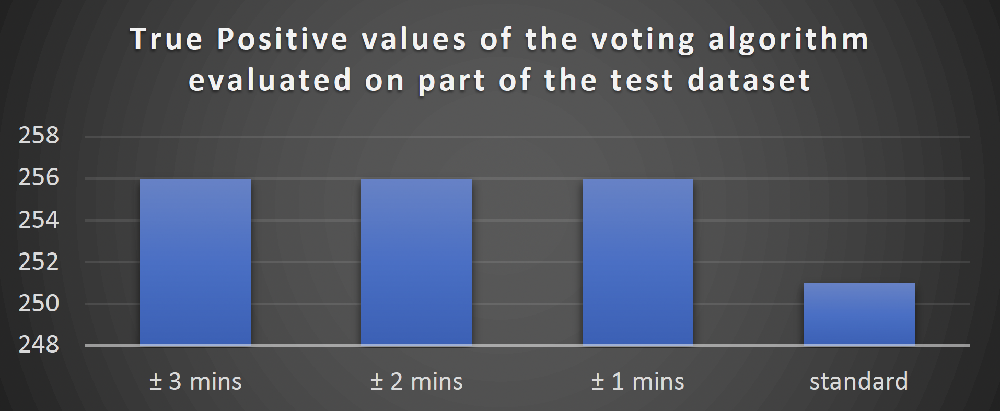
True positive values of the voting model
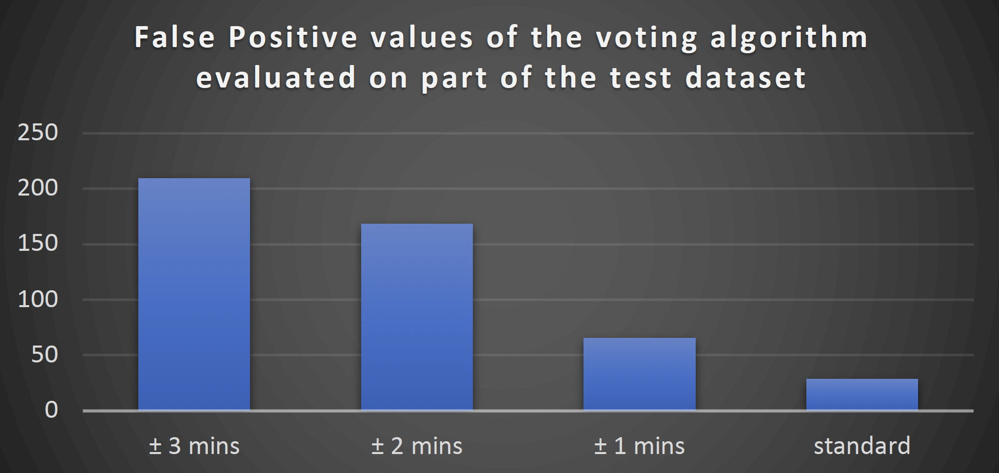
False positive values of the voting model
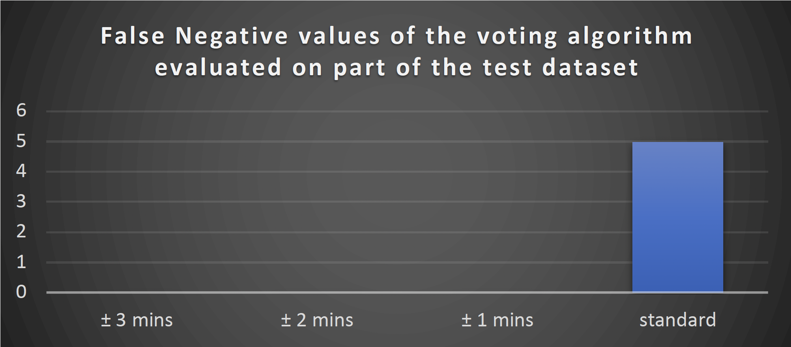
False Negative values of the voting model
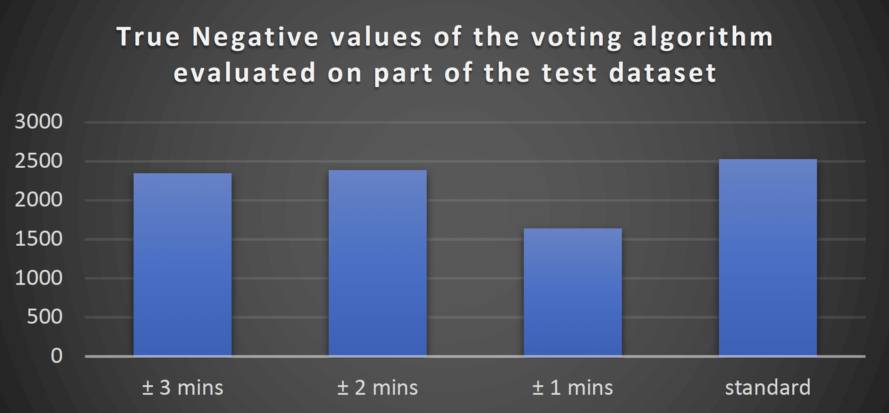
True negatives values of the voting model
After this analysis, we might think it is beneficial to increase the time window of the logs
analyzed, but please take a look at the following image, where I show the performance metrics
for the voting algorithm with all its possible configurations:
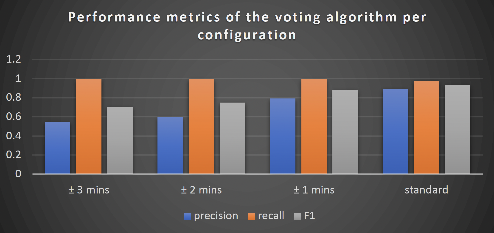
As it could be appreciated, the F1 score drops as the window increases in
size, which means analyzing more data is not helping the model make better decisions.
Impact
This work set the base for other of my co-workers as we will be further using
the code to perform attacks and collect information on different experiments. Currently, I am
still working on more experiments regarding this project, but as of now, I would like to conclude
that analyzing IP flow packets is hard; even a robust Random Forest Classifier has troubles as
the data is not significant enough if no metadata is created from it first. Also, the grammatical
structure and the complex syntaxis of the system logs created by Linux-based machines are a
massive challenge for the pre-trained BERT-based algorithms; fine-tuning it improves the model's
performance, but it is still challenging. Suppose you observe the last graph shown below. In
that case, you will be able to appreciate the comparison of all the performance metrics within
this project. My idea of a voting model improves the performance of the general predictions, as
we can observe by analyzing the F1 score.
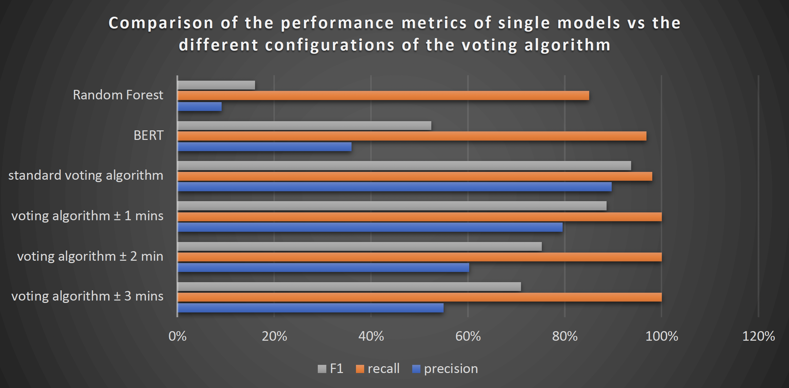
Code and Further Information
Unfortunately, as we worked with Company X, the data set is confidential. As I worked with a
Jupyter Notebook, I cannot upload the code to a cloud server. However, don't hesitate to get
in touch with me if you need to make use of the code or if you have any other inquiries.